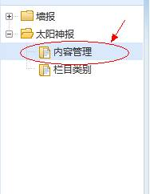
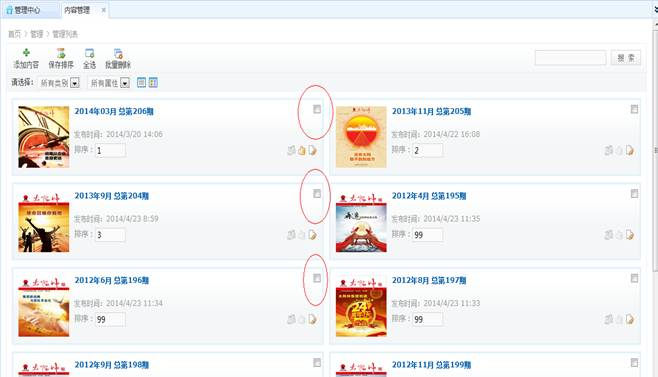
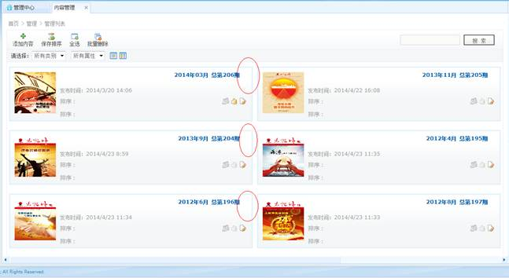
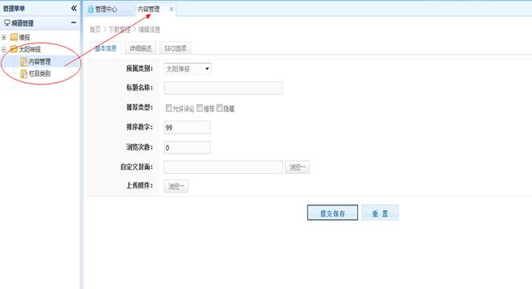
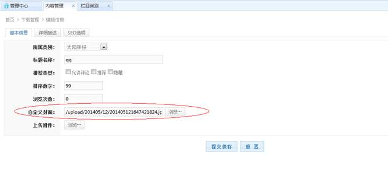
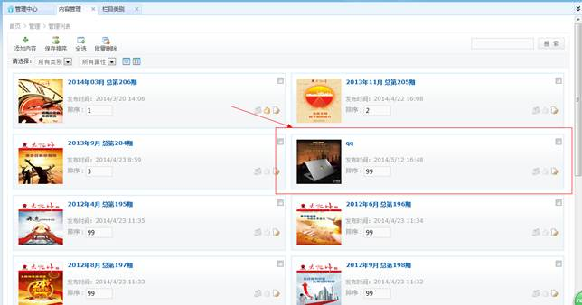
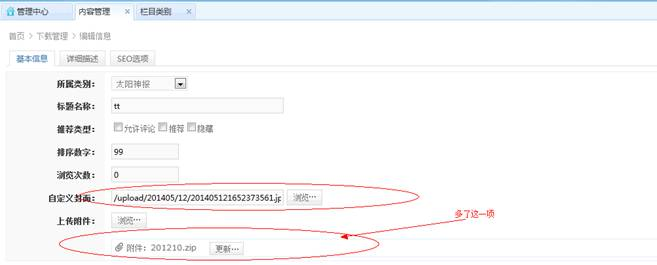
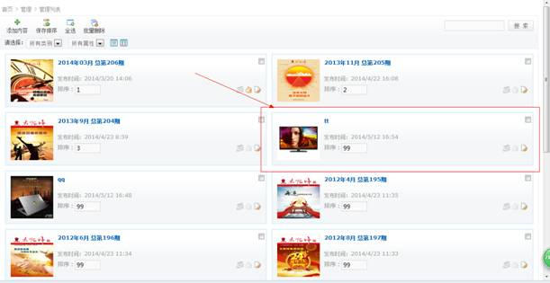

Bug1:
在该模块下，点击内容管理，分别在不同浏览器下测试，结果如下：
IE,FireFox下，红色圈中的勾选框显示正常：

但是在360浏览器下，勾选框神奇般的不见了，估计在chrome浏览器下也是这样（两者的内核一样），估计是标题把勾选框给挤掉了：

意见一：
进入太阳神报内容管理模块：

按照信息提示填写相关信息，注意：这一次只在自定义封面那里上传封面，不上传附件，提交保存：

如下图所示，后台是显示这条记录的：

回到前台页面，是没有刚才我添加的那条记录的：
接下来，这一次要在后台添加一条记录，注意：这一次既自定义封面，也上传附件，提交保存：

同样的，如下图所示，后台是显示这条记录的：

回到前台页面，是有刚才我添加的那条记录的：
建议：
应该统一即使不上传附件也应该能让它显示到前台页面上去，毕竟后台是看到了之前添加的那条记录，而前台却没有显示，会让人以为是系统出错了；
或者在上传附件那里限制一下条件，要求用户必须要上传附件，且要对附件的形式做下校验，因为我试了一下，我上传了一份附件的形式的后缀为.zip格式，页面显示是404,好像是pdf格式才能看。